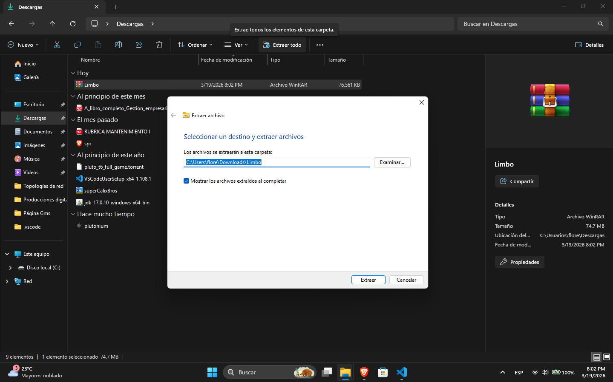
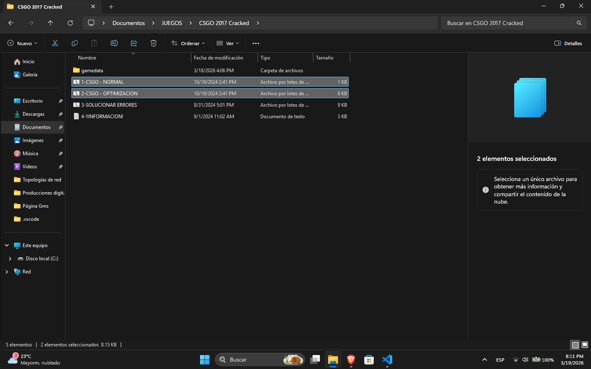
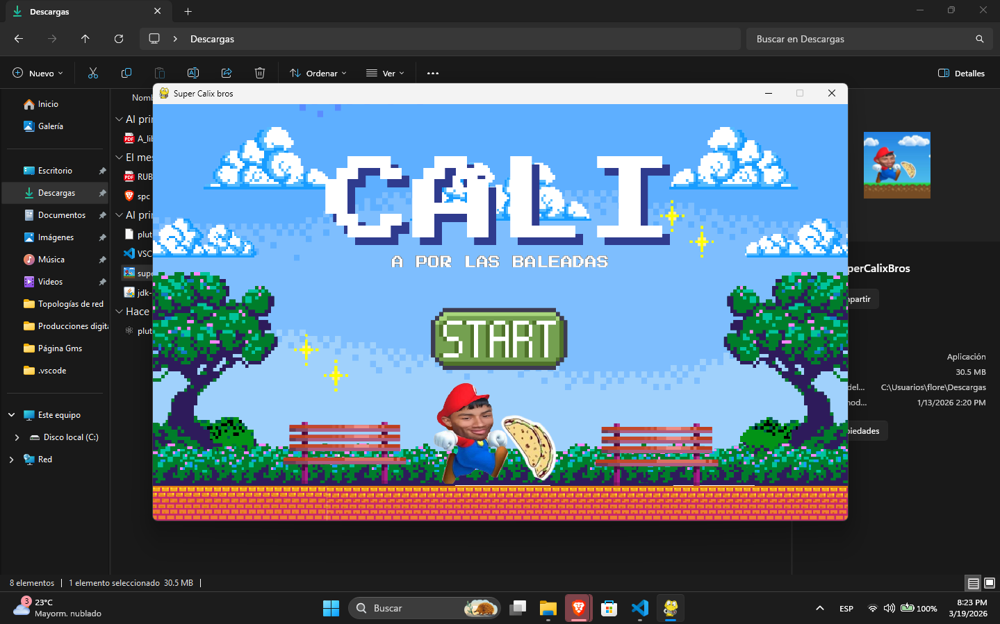
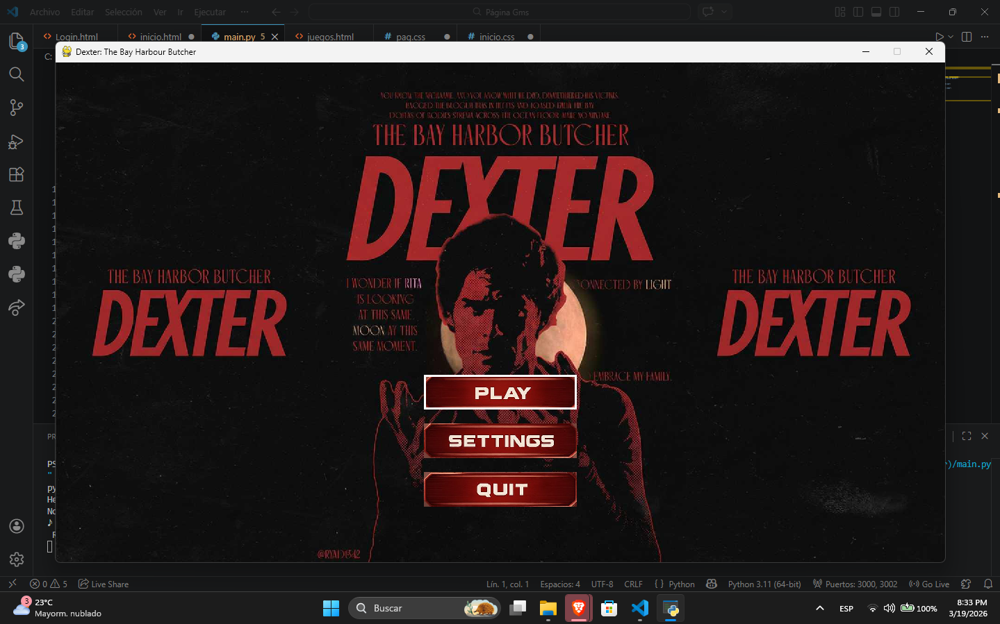

El juego se descarga en un archivo .zip o .rar. El primer paso es descomprimir el archivo utilizando winrar. En windows 11:

Se descomprime el archivo presionando "Extraer todo" en la barra superior. Luego se elige la el destino donde se descomprimirá la carpeta. Una vez descomprimido, se abre la carpeta. Para ejecutar el juego es necesario encontrar el archivo .bat o "Normal.bat". Esta es la versión normal del juego. Existe la version optimizada para mejorar el rendimiento y esta se encuentra como "Optimizacioón.bat".

Hay opciones para realizar las optimizaciones manualmente. Incluyendo opttimizaciones del sistema. Optimizaciones directas de windows 11.
Como extra, dos juegos creados en python. Super Calix Bros:

Un juego creado en la librería pygame en python 3.10. El juego está basado y es una versión recortada de el juego original de Super Mario Bros. El protagonista es Cálix, que es el mero queso y le gustan las baleadas, siendo ese el objetivo del juego mientras evita a Selvin que se lo quiere macanear.
Dexter: The bay Harbour Butcher:

Igualmete creado en la librería de pygame. Basado en la primera temporada de la serie "Dexter" de 2006. Donde nuestro protagonista, de día, es un analista forense de la ciudad de miami, pero por las noches es un asesino serial. Sólo mata a gente que lo merece, gracias a un código que le dio su padre. Siendo de la policía, los investiga, asecha, y cuando es el momento, se acerca a ellos e inyecta etorfina en ellos para después pasar a su mesa de muerte.
Para soporte y sugerencias de juegos. Únete al grupo de Whatsapp.